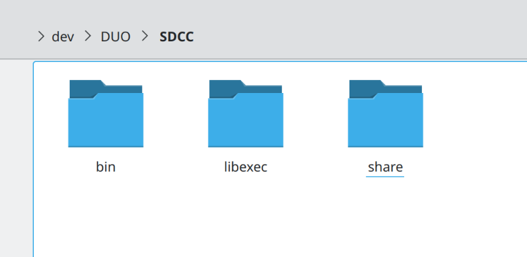

fip.bin is placed into the first partition, it contains FSBL (first stage bootloader), U-Boot, openSBI, and the compiled code for the second core (FreeRTOS), as well as set all the relevant options for the bootrom.
boot.sd is the kernel and the flattened devicetree that U-Boot will use to launch the system.
First, build SDCC (8051 compiler) for C906 to compile on Duo.
I am using a custom compiled Toolchain (from https://github.com/riscv-collab/riscv-gnu-toolchain) BECAUSE NOTHING PREBUILT F*CKING WORKS RIGHT OMFG HOW HARD IS IT TO BUILD A WORKING GCC+GLIBC AND
NOT FAIL (yes i had obscure nonsensical errors building sdcc before I rebuilt the toolchain myself, it fixed the issue, i lost like 6 hours on this, do not use the official archlinux packaged
toolchain for riscv64 or any other options like that)
For milk-v's toolchain mtune and march will be different (and it might not work at all for this, havent tried), look into the buildroot for examples of them.
But we have a couple dependencies that need to be built for riscv64:
for zlib:
mkdir build
cd build
cmake -DCMAKE_INSTALL_PREFIX=$PWD/out -DCMAKE_TOOLCHAIN_FILE=/home/vdragon/dev/DUO/toolchain_c906.cmake ..
make -j16
make install
for boost:
# Build and setup boost.build (ONLY boost.build) for your system (google)
# then:
mkdir build
cd build
./build.sh
And finally SDCC, which we build statically just to be sure:
mkdir build
Because i changed toolchain midway, my out folder is a mess, but the idea is to end up with bin, libexec, and share (the one from the host compilation) folders
cd build
# build libs for sdcc devices, we need sdcc for that and it does it by itself, so build for host
../configure --disable-pic14-port --disable-pic16-port
make -j16
make DESTDIR=$PWD/out install
rm -r $PWD/out/usr/local/bin $PWD/out/usr/local/libexec
make clean
# and then delete everything but out and our scripts becasue make has the dumbs and will try to use the x86_64 files
#build for riscv64 immediatly after
configure.sh
build.sh
make DESTDIR=$PWD/out install

Grab those files, put them in your system image in the appropriate folders (copying the 3 folders in /usr/local is a good option)
Check SDCC runs (if you didnt put it in /usr/local you might want to add that to PATH):
I also grabbed a example to test functionality:
A more up to date SG2000 datasheet: sg2000.pdf
Build date: 1/03/2024